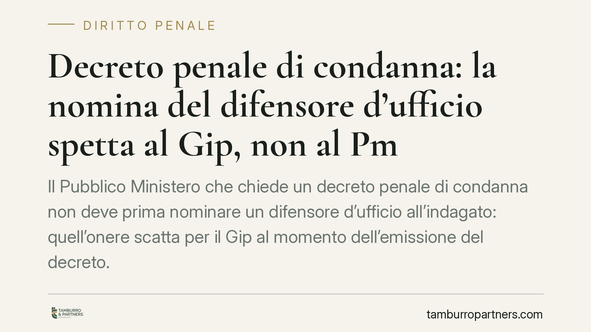

Decreto penale di condanna: la nomina del difensore d'ufficio spetta al Gip, non al Pm
Il Pubblico Ministero che chiede un decreto penale di condanna non deve prima nominare un difensore d'ufficio all'indagato: quell'onere scatta per il Gip al momento dell'emissione del decreto. Lo chiarisce una recente pronuncia della Cassazione penale, che definisce abnorme l'ordinanza del giudice che restituiva gli atti al Pm per tale ragione. Il tema tocca tempi e garanzie di un procedimento diffusissimo.

Il caso
Un Gip aveva restituito gli atti al Pubblico Ministero contestando la mancata nomina di un difensore d'ufficio all'indagato già nella fase anteriore alla richiesta di decreto penale di condanna. La Corte di Cassazione ha giudicato quell'ordinanza abnorme, annullandola.
Un provvedimento è abnorme quando esce dal sistema processuale, perché adotta un atto non previsto o esercita un potere in modo macroscopicamente deviato dalle regole. La conseguenza pratica è rilevante: l'atto abnorme è immediatamente ricorribile per cassazione, anche fuori dai casi tipici di impugnazione, proprio perché blocca indebitamente il processo. Qui l'ordinanza del Gip aveva creato una stasi non giustificata, imponendo al Pm un adempimento che la legge non gli attribuisce in quella fase.
Inquadramento normativo
Il decreto penale di condanna è disciplinato dagli artt. 459 e seguenti del codice di procedura penale. È uno strumento di definizione del procedimento che si svolge, nella sua prima fase, inaudita altera parte: il Pm chiede e il Gip emette il decreto senza che l'indagato sia previamente sentito. Il contraddittorio non viene soppresso, ma differito: si attiva con l'opposizione dell'interessato.
Proprio la natura di questa fase spiega la ripartizione degli obblighi. La fonte dell'obbligo di nominare il difensore d'ufficio è l'art. 97 c.p.p., che garantisce l'assistenza tecnica a chi non abbia nominato un difensore di fiducia. Nel procedimento per decreto penale, però, il momento in cui occorre assicurare all'indagato un difensore è quello dell'emissione e della notifica del decreto: è da lì che si apre concretamente la possibilità di reagire. La nomina, pertanto, spetta al Gip, non al Pm nella fase di richiesta.
Va tenuta distinta un'altra norma: l'art. 461 c.p.p. disciplina l'opposizione al decreto penale e fissa il termine entro cui proporla, ma non regola la nomina del difensore d'ufficio. Confondere i due piani è l'errore in cui è incorsa l'ordinanza annullata.
Questo non significa che prima di quel momento l'indagato sia privo di tutele. I diritti difensivi rilevano fin dalla fase delle indagini; ciò che la pronuncia afferma è più circoscritto: la struttura del rito, pensato senza preventivo contraddittorio, non impone al Pm una nomina d'ufficio anticipata rispetto alla propria richiesta.
Implicazioni pratiche
Per chi riceve un decreto penale cambia poco nella sostanza delle garanzie, ma è utile avere chiaro il meccanismo. Il decreto non è una semplice contestazione: è una condanna a tutti gli effetti, destinata a diventare definitiva se non si reagisce.
La reazione è l'opposizione, che va proposta entro quindici giorni dalla notifica del decreto (art. 461 c.p.p.). Con l'opposizione l'interessato riapre il contraddittorio e può chiedere il giudizio ordinario o un rito alternativo, oppure definire la posizione in altro modo. Decorso il termine senza opposizione, il decreto diventa esecutivo.
La pronuncia, in definitiva, sposta un adempimento procedurale (chi e quando nomina il difensore d'ufficio) ma non riduce le tutele difensive: il diritto di difesa resta pieno e si esercita, nei termini, attraverso l'opposizione.
Cosa fare in concreto
- Verificate subito la data di notifica del decreto: da quel giorno decorrono i quindici giorni per l'opposizione (art. 461 c.p.p.), termine perentorio da non lasciar scadere.
- Leggete con attenzione il capo di imputazione e la pena inflitta: il decreto penale irroga una pena pecuniaria, ma produce effetti sostanziali di condanna.
- Valutate con un difensore la strategia: opposizione per il giudizio ordinario, richiesta di rito alternativo, o altra via difensiva secondo il caso.
- Controllate la regolarità delle notifiche e della nomina difensiva: eventuali vizi possono incidere sulla decorrenza del termine.
- Non fate decorrere il termine in attesa di chiarimenti informali: una volta scaduto, il decreto diventa esecutivo e lo spazio di reazione si chiude.
Consigliamo di rivolgersi tempestivamente a un difensore appena ricevuto il decreto, perché il margine di intervento è definito da un termine breve e non prorogabile.
Ogni condominio ha una storia a sé.
Se gestisci un'amministrazione e vuoi un confronto su una specifica questione condominiale, scrivi allo studio. Ti rispondiamo entro un giorno lavorativo.